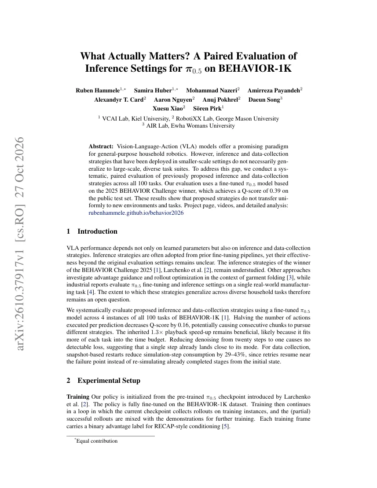
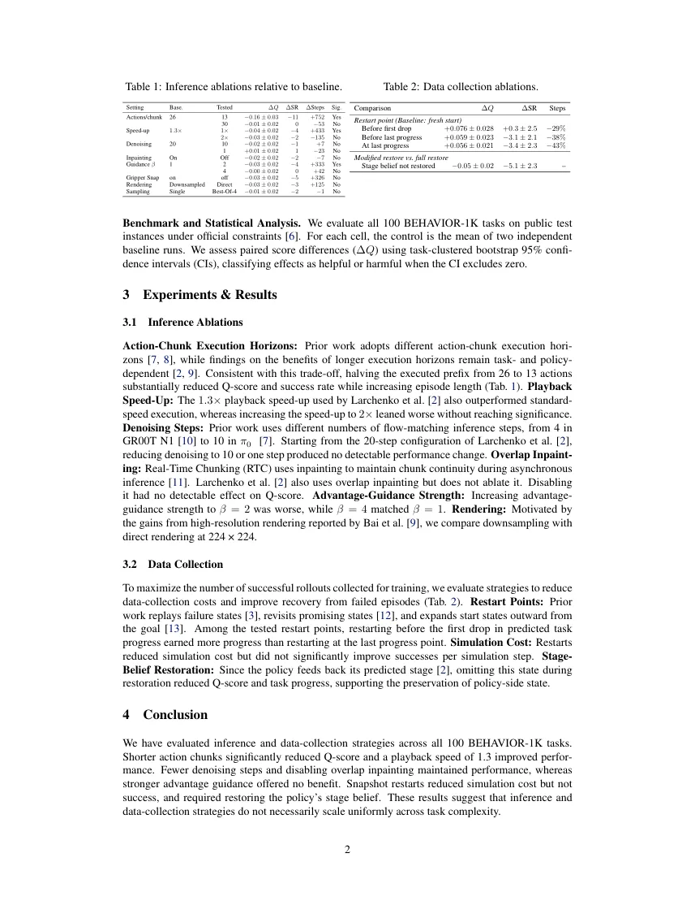

π0.5 在 BEHAVIOR-1K 上到底什么在起作用：100 个任务的配对评测
What Actually Matters? A Paired Evaluation of Inference Settings for $\pi_{0.5}$ on BEHAVIOR-1K
9 个推理旋钮里只有 1 个显著：每次预测执行 13 条而非 26 条动作，Q-score 掉 0.16±0.03、成功率掉 11 个点、episode 多 752 步；去噪 20→1 步、关掉 overlap inpainting、2 倍速、best-of-4、224 直接渲染都在置信区间内看不出差别。数据采集侧快照重启省 29–43% 仿真步，但成功率没变。
delta Q for halved action chunk
extra steps
sim-step saving
Q-score on public test
作者、单位与技术谱系 · Research context
作者与单位
研究脉络
- Larchenko et al., 2025 BEHAVIOR Challenge 冠军方案方法基座关系：本文的 π0.5 检查点、1.3 倍播放加速、20 步去噪、overlap inpainting 与 stage-belief 反馈全部继承自该方案，本文正是对这套「继承来的配方」逐项做消融。[论文 §2、§3.1 与参考文献 [9]]
- π0.5 与 π0.6*（RECAP 式 advantage 条件）方法上游关系：π0.5 提供 VLA 主干与流匹配动作头；π0.6* 引入的 RECAP 式二值 advantage 条件被本文用于训练帧标注，从而把「成功/失败经验」混入示范训练。[论文 §2 与参考文献 [2][8]]
- BEHAVIOR-1K 与 2025/2026 BEHAVIOR Challenge 评测规则评测基座关系：提供 100 个家务任务、public test instances 与官方约束；本文所有数字都在该协议下取得，因此结论的适用范围被这个 benchmark 的仿真分布限定。[论文 §2 与致谢]
合作网络
- VCAI Lab（Kiel）↔ RobotiXX Lab（GMU）VCAI Lab, Kiel University → RobotiXX Lab, George Mason University关系：共同署名（跨机构合作论文）[论文首页署名]
- 本文 → Larchenko 冠军方案的检查点与推理配置本文评测流程 → Larchenko et al. π0.5 checkpoint关系：明确技术依赖（继承预训练权重与推理配方）[论文 §2 与 §3.1]
- 本文 ↔ 项目页（代码/视频/逐任务分析）Ruben Hammele 项目页 → behavior2026 分析页面关系：官方项目入口（作者自建，公开可访问）[论文摘要与项目页]
作者与单位取自 arXiv 官方 HTML 首页的三个署名块与致谢；「π0.5 是主干、Larchenko 方案是配方来源、BEHAVIOR-1K 是评测基座」均为正文显式表述，属有来源的解读。原文未标通讯作者，不推断师生或实验室隶属；「Equal contribution」只覆盖第一署名块，未指明具体个人。
方法本质拆解 · What actually changed
是不是微调？
是微调，但微调不是本文贡献。策略从 Larchenko 等人的 π0.5 检查点全参微调于 BEHAVIOR-1K，再进入「采 rollout → 与示范混训」的循环，训练帧带 RECAP 式二值 advantage 标签。所有推理与采集干预在评测时都不重训，只改执行配置，因此各分支之间的差异不能归因于权重。
有没有额外约束？
没有新增 loss、正则或几何约束；约束落在评测协议上：只用官方 public test instances 与官方任务约束，每个单元的对照取两次独立 baseline 运行的均值，统计量是任务聚类的配对 ΔQ 与 95% bootstrap 区间，并规定「区间排除零」才允许称为有益或有害。这套协议是本文真正的「方法」。
推理/后端到底做了什么？
推理侧逐个旋钮开合：每次预测执行的动作条数（26/13/30）、播放速度（1.3×/1×/2×）、流匹配去噪步数（20/10/1）、是否用 RTC 式 overlap inpainting 保持块间连续、advantage guidance 强度 β、夹爪 snap、224 直接渲染与降采样、单次采样与 best-of-4。没有引入新后端、新规划器或全局优化，全部是同一策略的前向调用方式。
方法本质是什么？
本质是把「策略能力」与「执行/采集调度」解耦做配对干预，再问哪些旋钮的效应能超过噪声。结论是绝大多数旋钮落在噪声内，唯一大效应来自「每次预测少执行一半动作」——相邻 chunk 因此可能追求不同策略；而数据采集侧的收益只体现在仿真成本（−29% 到 −43% 步数），不体现在成功率，且依赖策略内部状态被完整恢复。
输入冻结的微调 π0.5 与官方 BEHAVIOR-1K 评测；只改执行前缀、播放速度、去噪步数与采集重启点，不重训权重；直接效果是把 9 个推理旋钮压到 1 个显著（动作块减半 −0.16 Q），并把采集成本降 29–43% 而不提升成功率。

桥接价值Bridge
桥接价值
这篇的价值不在 VLA，而在「怎么判断一个旋钮到底有没有用」。它把结论写在置信区间上：9 组推理干预里只有 1 组显著，其余 8 组的 ΔQ 都落在 ±0.03 以内，而很多工程团队会把这些 0.01–0.03 的抖动当成调优收益。对我们的桥接点是两条：一是把「估计器能力」与「调度/初始化策略」分开做配对干预，二是把判定口径固化成任务/场景聚类的 bootstrap 区间，而不是单次跑分。它还给出一个与常见直觉相反的结论——每次预测少执行一半动作会让 Q 掉 0.16，这相当于告诉我们：调度层的滞后与切换成本可能比模型精度更值钱。
方法与模块Method
方法摘要
策略从 Larchenko 等人（2025 BEHAVIOR Challenge 冠军）的预训练 π0.5 检查点出发，在 BEHAVIOR-1K 数据集上全参微调；随后进入循环：用当前检查点在同批训练实例上采 rollout，把（部分）成功的 rollout 与示范混在一起继续训练，每帧带一个 RECAP 式的二值 advantage 标签。评测跑全部 100 个任务的 public test instances 并遵守官方约束；每个「设置-任务」单元的对照是两次独立 baseline 运行的均值，用任务聚类 bootstrap 得到 ΔQ 的 95% 置信区间，只有区间排除零才判为有益或有害。干预项分两组：推理侧 9 个（动作块执行前缀、播放速度、去噪步数、overlap inpainting、advantage guidance 强度、夹爪 snap、渲染分辨率、采样方式等），数据采集侧 3 个重启点策略加 1 个 stage belief 恢复项。
可迁移模块
可以搬走三件东西。第一是判定协议：配对差 + 任务聚类 bootstrap + 「CI 排除零才算效应」，这套口径比单一均值和单次最好成绩稳健得多，我们做迭代次数、阈值、鲁棒核的消融时可以直接套。第二是「执行前缀长度」这个变量本身：26/13/30 三条动作的实验等价于我们的滑窗长度与决策滞后，它说明把执行粒度改小不一定更稳，反而可能让相邻决策追求不同策略。第三是快照重启（restart before first drop）与 stage belief 的组合：省 29–43% 仿真步的前提是把策略侧的状态一起恢复，不恢复直接掉 0.05 Q 和 5.1 个点成功率——这条对我们做「从失败点续跑」的数据回放很有参考价值。

证据Evidence
关键证据与数字
推理侧（Table 1，相对 baseline，ΔQ 带 95% CI）：动作块执行 26→13 条，ΔQ −0.16±0.03、ΔSR −11、ΔSteps +752，显著；26→30 条 −0.01±0.02、步数 −53，不显著；播放速度 1.3×→1× 为 −0.04±0.02（显著变差），1.3×→2× 为 −0.03±0.02（不显著）；去噪 20→10 为 −0.02±0.02、20→1 为 +0.01±0.02，均不显著；关掉 overlap inpainting −0.02±0.02 不显著；advantage guidance β=2 为 −0.03±0.02（显著变差），β=4 为 −0.00±0.02；夹爪 snap 关闭 −0.03±0.02、224 直接渲染 −0.03±0.02、best-of-4 采样 −0.01±0.02，都不显著。数据采集侧（Table 2，相对「从头开始」）：在首次进度下降前重启 +0.076±0.028 Q、成功率 +0.3±2.5、仿真步 −29%；在最后进度前重启 +0.059±0.023、−3.1±2.1、−38%；在最后进度处重启 +0.056±0.021、−3.4±2.3、−43%；不恢复 stage belief 则 −0.05±0.02 Q、−5.1±2.3 成功率。参照点在公开测试集上 Q-score 0.39。
边界与下一步Limits & Next Step
边界与风险
作者明确的限制是「策略不保证跨任务复杂度一致迁移」，且实验只围绕一个微调检查点与一个 benchmark。我们读下来还有四条需要打问号：一是「no detectable change」在统计上只是不拒绝零假设，作者没有做等价性检验（TOST），所以「去噪 1 步没用」应读作「当前样本量下看不出差别」；二是对照是两次独立 baseline 的均值，baseline 自身的方差与种子数没有报告，配对差的方差来源不完全透明；三是全部在 BEHAVIOR-1K 仿真内，100 个任务各 4 个实例，真机上的接触与感知噪声分布不同；四是 Q-score 作为聚合指标会掩盖任务级异质性，13 条动作的 −11 成功率可能集中在少数长程任务上。我们待核验的是：13 条动作的结论在控制频率不同、或存在显式重规划时是否仍成立。
下一步实验
第一，把「执行前缀 / 决策滞后」当成我们调度层的独立变量，固定估计器不重训，在同一段序列上扫 1/2/4 帧的执行粒度，看 ATE 与收敛步数的配对差是否也出现「更小粒度更差」的翻转。第二，把本文的判定口径落到我们的消融表：每个配置跑两次独立基线、用序列/场景聚类 bootstrap 出 CI，只有排除零才写进结论，避免再把 0.01–0.03 的抖动当改进。第三，借鉴「成本降但成功率不升」的结论，把「从失败点续跑」用于我们自己的数据回放，但必须同时恢复滤波器/优化器的内部状态（对应本文的 stage belief），并单独报告「省了多少步」与「多得了多少成功」。